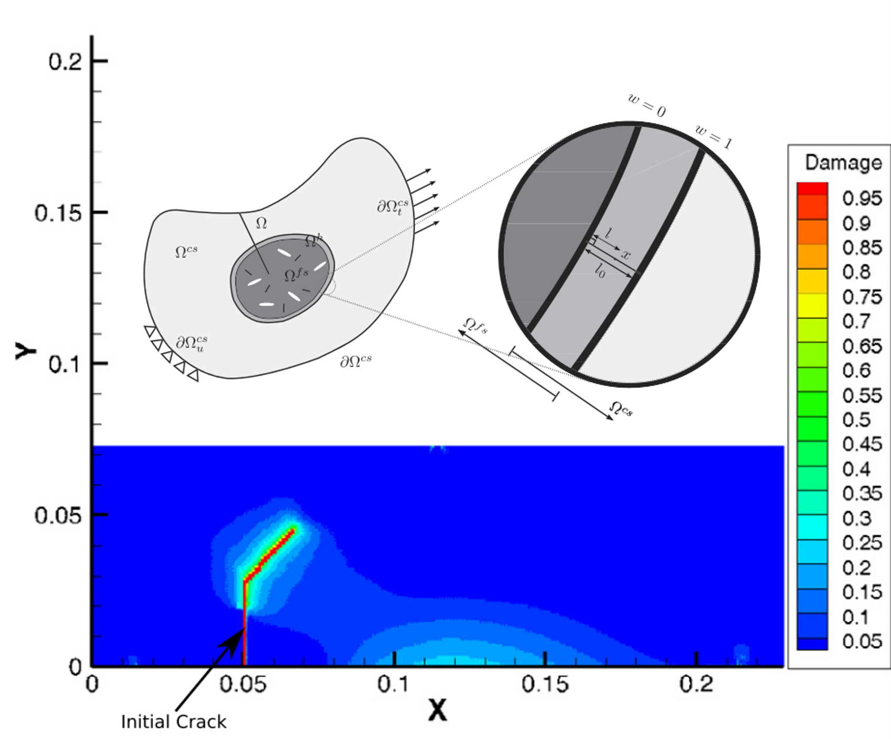
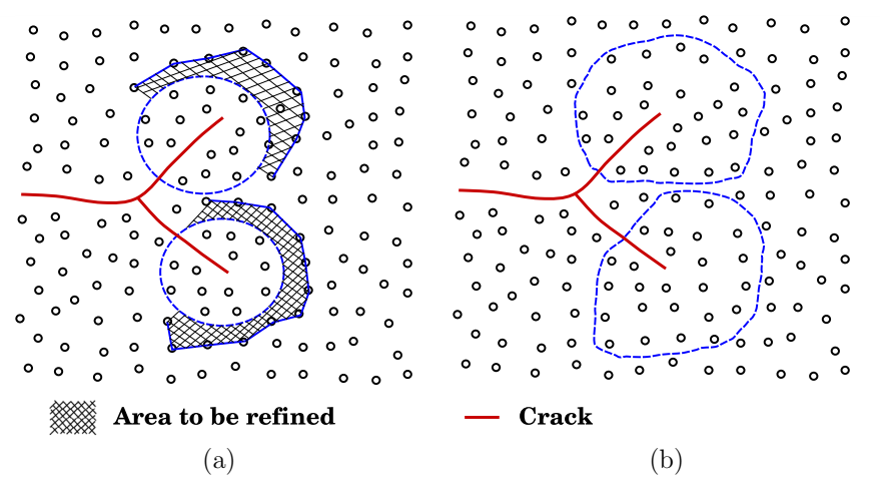

How Much Physics Does a Crack Really Need?
Why multiscale fracture should spend detailed physics only where fracture requires it
A crack creates a peculiar computational problem.
Most of a structure may behave smoothly, while a very small region near a crack front contains the phenomena that control failure.
That immediately raises an engineering question:
Why should we solve the most expensive physical model everywhere when the difficult fracture physics is localized?
This question is more important than mesh refinement alone.
Near a crack, we may need a finer continuum discretization, a different constitutive description, or even an atomistic model. Far from the crack, that level of detail may contribute little to the engineering response while consuming most of the computational cost.
The central problem of multiscale fracture is therefore not simply
How fine should the mesh be?
It is
How much physics should be resolved at each location?
This article follows that question from reinforced-concrete structures, through continuum-to-continuum coupling, to atomistic fracture.
A crack does not make the whole structure equally difficult
Consider a large structure containing a crack.
Far from the crack front, the displacement and stress fields may vary relatively smoothly. A conventional structural model can often represent this region adequately.
Near the crack front, however, several things happen simultaneously:
- stresses and strains localize,
- displacement continuity may be lost,
- material nonlinearity becomes important,
- the fracture process zone develops,
- crack direction must be determined,
- and, at sufficiently small scales, the discrete material structure may matter.
The computational demand is therefore strongly nonuniform.
Conceptually,
\[ \text{structure} = \text{mostly smooth response} + \text{small fracture-critical region}. \]
Treating both regions with exactly the same resolution is often inefficient.
This is the starting point of multiscale fracture.
The first scale problem already appears in reinforced concrete
Reinforced concrete is a useful example because the structural model already contains several distinct mechanical descriptions.
Concrete cracks.
Steel reinforcement remains continuous.
The concrete and steel transfer forces through bond.
A three-dimensional cohesive-crack formulation developed for reinforced-concrete structures represented concrete with an extended meshfree approximation, reinforcement with truss or beam finite elements, and their interaction through a bond model.
This is important mechanically.
If the reinforcement were rigidly attached to the surrounding concrete, the model would miss the local redistribution associated with bond slip. Around a concrete crack, reinforcement stress increases while the surrounding concrete unloads. That redistribution helps determine crack spacing and the eventual crack pattern.
So even before moving toward atomistic scales, fracture analysis is already telling us something important:
Different parts of the same structural problem may require different mechanical descriptions.

The lesson from Figure Figure 1 is broader than reinforced concrete.
A useful computational model does not have to use one universal representation everywhere.
It has to preserve the mechanics that control the response.
Refining the whole structure is the obvious solution—but often the wrong one
Suppose the crack front requires a very fine mesh.
The brute-force solution is straightforward:
refine everything
→ resolve the crack region
→ pay the fine-scale cost everywhereFor a small specimen this may be acceptable.
For a three-dimensional structural model, particularly in dynamics, it can become extremely expensive. A fine discretization increases not only the number of degrees of freedom but can also reduce the stable time step in explicit integration.
Yet most of those fine-scale degrees of freedom may lie far from the crack.
The alternative is:
coarse model over most of the structure
↓
fine model only around the fracture-critical regionThis sounds like ordinary local mesh refinement.
But multiscale methods can go further.
The fine and coarse regions can be treated as distinct models that exchange mechanical information.
Continuum-to-continuum coupling: change resolution without changing the fracture mechanics
One approach uses a fine continuum model around the crack and a coarse continuum model elsewhere.
In the extended Arlequin formulation, the two models overlap in a handshake domain. Their energies are blended through a weighting function.
Schematically,
\[ W = w(\mathbf X)W^{\mathrm{coarse}} + [1-w(\mathbf X)]W^{\mathrm{fine}} + W^{\mathrm{coupling}}. \]
The weighting function changes gradually through the overlap:
\[ w=1 \quad \text{in the coarse-only region}, \]
\[ 0<w<1 \quad \text{in the handshake region}, \]
and
\[ w=0 \quad \text{in the fine-only region}. \]
This gradual transition matters particularly in dynamics because an abrupt artificial interface can reflect stress waves.
The coupling problem is therefore mechanical, not merely geometrical.
The two descriptions must exchange displacement, force, and energy without creating a spurious interface that behaves like an artificial material boundary.

There is another elegant feature.
The crack is represented by XFEM in both continuum scales.
The displacement approximation can be viewed as
\[ \mathbf u^h = \mathbf u^{\mathrm{cont}} + \mathbf u^{\mathrm{discont}}. \]
Thus the fracture kinematics do not have to change merely because the spatial resolution changes.
This separates two questions that are often mixed together:
- How should the crack be represented?
- How much resolution is needed around it?
That separation is extremely useful.
The fine-scale region must contain the physics—not merely the crack tip
There is an important engineering subtlety.
If cohesive fracture is used, the relevant fine region is not necessarily an infinitesimal neighborhood of the mathematical crack tip.
The fracture process zone occupies a finite length.
A characteristic estimate is of the form
\[ l_{\mathrm{ch}} \sim \frac{E G_f}{f_t^2}, \]
with the appropriate modification for the assumed stress state.
Here \(E\) is Young’s modulus, \(G_f\) is fracture energy, and \(f_t\) is tensile strength.
The exact expression is less important here than its engineering meaning:
The high-resolution region must be large enough to contain the physical process that the coarse model cannot represent adequately.
This is a general rule for multiscale modeling.
Do not choose the fine-scale domain simply because a geometric crack tip is located there.
Choose it because the relevant physics is located there.
But why stop at a finer continuum?
A continuum model assumes that material behavior can be represented through continuum fields such as stress and strain.
At sufficiently small scales, however, fracture is ultimately associated with changes in interactions between material constituents.
For graphene, for example, crack propagation can be studied directly through the motion and interaction of carbon atoms.
Molecular-dynamics simulations of cracked graphene show the fracture process in terms of bond stretching, bond reorientation, local energy, temperature, and bond breaking.
At that scale, the question
Where is the crack?
has a very different numerical meaning.
We no longer need to insert a continuum displacement discontinuity in exactly the same way.
The loss of connectivity emerges from the changing atomic interactions.
This gives a hierarchy:
structural scale
stress, deformation, reinforcement, global equilibrium
continuum fracture scale
crack surfaces, cohesive traction, process zones
atomistic scale
atomic interactions, bond deformation, bond breakingNone of these descriptions is universally “more correct.”
They answer different questions at different scales.
Atomistic fracture reveals what a continuum law has already averaged out
At the continuum scale, a cohesive law may be written conceptually as
\[ \mathbf t = \mathbf t(\llbracket \mathbf u \rrbracket), \]
where \(\mathbf t\) is the traction transmitted across the fracture process zone and \(\llbracket \mathbf u \rrbracket\) is the displacement jump.
That law deliberately compresses enormous microscopic complexity into an engineering relation.
At the atomistic scale, some of that hidden complexity becomes explicit.
In the graphene simulations, crack growth was examined through atomic bond elongation and rotation. The work also showed that numerical time resolution itself matters for resolving propagation accurately.
This does not make the atomistic model a replacement for cohesive fracture mechanics.
It tells us what has been homogenized when we use a continuum fracture law.
That distinction is essential:
A fine-scale model should be introduced because the engineering question requires its information—not because finer is automatically better.
The real opportunity: let the fine physics follow the crack
A fixed atomistic region creates another inefficiency.
The crack moves.
If the expensive region remains fixed, one must either make it very large from the beginning or risk the crack leaving it.
The adaptive multiscale approach solves this by allowing the fine-scale domain itself to evolve.
In the meshless adaptive multiscale formulation, the coarse region is represented by a continuum meshless model, while a molecular-statistics region surrounds the crack tip.
As the crack advances:
identify the crack-tip region
↓
refine material ahead of the crack into the atomistic description
↓
allow the crack to propagate through the fine-scale model
↓
coarsen material left sufficiently far behind
↓
move the expensive physics with the crackThe atomistic region therefore becomes a moving computational microscope.

This is more than adaptive meshing.
The model is changing what physics is solved as the crack moves.
Information must cross the scale boundary
Once two physical descriptions coexist, they must communicate.
In the continuum–atomistic model, ghost atoms provide the coupling.
Their positions are obtained from the coarse-scale displacement field and then imposed on the fine-scale model.
Conceptually,
\[ \mathbf u^{\mathrm{ghost}} \leftarrow \mathbf u^{\mathrm{coarse}}. \]
Meanwhile, the fine-scale calculation determines the local fracture evolution that must ultimately be represented in the coarse description.
The difficult part of multiscale mechanics is therefore not merely having two models.
It is transferring the right information between them without corrupting the physics.
This suggests a useful hierarchy of questions:
- What information does the coarse model need from the fine model?
- What boundary information does the fine model need from the coarse model?
- How should energy and forces pass through the coupling region?
- When should a region change scale?
- How is an atomistic crack converted into a continuum crack description?
These are mechanics questions disguised as computational questions.
A small crack can expose the limit of continuum intuition
The graphene studies provide another important lesson.
At engineering scales, fracture mechanics often encourages us to think in terms of continuum quantities such as crack length, stress intensity, and fracture toughness.
At nanometer scales, lattice orientation and discrete bond structure can become visible in the mechanical response.
The molecular-dynamics studies examined graphene with different lattice orientations and crack sizes. They showed that crack behavior cannot always be interpreted by simply shrinking a macroscopic continuum picture to atomic dimensions.
This is physically reasonable.
A continuum assumes that sufficiently many microscopic degrees of freedom have been averaged into smooth fields.
When the crack size approaches the material’s discrete structural scale, that averaging becomes less complete.
The question changes from
What continuum field surrounds the crack tip?
toward
Which bonds carry the load, how are they oriented, and how do they fail?
This is not a contradiction between atomistics and fracture mechanics.
It is a statement about the range over which a particular description contains the information needed by the problem.
So how much physics should we use?
A useful hierarchy is:
| Region / question | Possible description | Information retained |
|---|---|---|
| Global structural response | coarse continuum | equilibrium, stiffness, load path |
| Crack-dominated structural region | enriched/cohesive continuum | displacement jump, crack geometry, fracture energy |
| Material heterogeneity | representative fine-scale cell | effective constitutive response |
| Highly localized fracture region | fine continuum | detailed process-zone fields |
| Atomic-scale fracture | atomistics | bond interactions and discrete lattice effects |
The important word is possible.
There is no universal rule that every fracture problem should descend through all these levels.
For an engineering beam, an atomistic calculation would normally be unnecessary.
For a nanoscale material, a conventional continuum crack law may suppress exactly the information of interest.
For a large dynamic fracture calculation, a globally fine continuum mesh may be accurate but computationally wasteful.
The appropriate model depends on the engineering question.
Multiscale fracture is an information-allocation problem
We can now state the deeper idea.
A computational model has a finite budget:
- degrees of freedom,
- time steps,
- constitutive complexity,
- geometric complexity,
- memory,
- and computation time.
The purpose of multiscale analysis is not simply to make a model complicated.
It is to allocate that budget according to where physically important information is generated.
For fracture:
\[ \text{computational effort} \not\propto \text{volume of the structure}. \]
Ideally,
\[ \text{computational effort} \propto \text{difficulty and importance of the local physics}. \]
That is why a moving fine-scale region is so attractive.
It makes computational resolution follow mechanical necessity.
The connection to energy
There is also a direct mechanics interpretation.
At every scale, the model must transmit mechanically consistent work.
At the structural scale, force and displacement are energy-conjugate:
\[ \delta W = \mathbf F \cdot \delta \mathbf u. \]
In the continuum,
\[ \delta W_{\mathrm{int}} = \int_\Omega \boldsymbol{\sigma}:\delta\boldsymbol{\varepsilon}\,d\Omega. \]
Across a cohesive crack,
\[ \delta W_{\mathrm{coh}} = \int_{\Gamma_c} \mathbf t\cdot \delta\llbracket\mathbf u\rrbracket \,d\Gamma. \]
A multiscale coupling method must preserve the same physical bookkeeping while transferring information between descriptions.
This is why scale coupling cannot be reduced to interpolating one displacement field onto another.
The essential question is whether the transfer preserves the mechanical work that connects
\[ F \leftrightarrow \sigma \leftrightarrow \varepsilon \leftrightarrow u. \]
The numerical descriptions may change.
The mechanics cannot.
Engineering takeaway
Use the simplest model where the response is simple, and spend detailed physics where fracture makes the problem difficult.
This principle is broader than computational fracture.
It applies whenever localized phenomena control a much larger system:
- plastic zones,
- contact,
- material interfaces,
- local buckling,
- damage,
- corrosion fronts,
- and other multiscale processes.
The finest model is not automatically the best model.
A good engineering model preserves the information required by the question while discarding detail that does not materially affect the answer.
In fracture, the crack itself tells us where that information is concentrated.
Computational fracture series
Previous: Is Enrichment the Only Way to Represent a Crack?
Series overview: Why Is Computational Fracture So Difficult?
Coming next: What Did Enriched Methods Teach Us About Computational Mechanics?
Original research
Rabczuk, T., Zi, G., Bordas, S., & Nguyen-Xuan, H. (2008).
A geometrically non-linear three-dimensional cohesive crack method for reinforced concrete structures.
Engineering Fracture Mechanics, 75, 4740–4758.
https://doi.org/10.1016/j.engfracmech.2008.06.019
Talebi, H., Zi, G., Silani, M., Samaniego, E., & Rabczuk, T. (2012).
A Simple Circular Cell Method for Multilevel Finite Element Analysis.
Journal of Applied Mathematics, 2012, Article 526846.
https://doi.org/10.1155/2012/526846
Silani, M., Talebi, H., Ziaei-Rad, S., Hamouda, A. M., Zi, G., & Rabczuk, T. (2015).
A three dimensional extended Arlequin method for dynamic fracture.
Computational Materials Science, 96, 425–431.
https://doi.org/10.1016/j.commatsci.2014.07.039
Yang, S.-W., Budarapu, P. R., Mahapatra, D. R., Bordas, S. P. A., Zi, G., & Rabczuk, T. (2015).
A meshless adaptive multiscale method for fracture.
Computational Materials Science, 96, 382–395.
https://doi.org/10.1016/j.commatsci.2014.08.054
Budarapu, P. R., Javvaji, B., Sutrakar, V. K., Mahapatra, D. R., Zi, G., & Rabczuk, T. (2015).
Crack propagation in graphene.
Journal of Applied Physics, 118, 064307.
https://doi.org/10.1063/1.4928316
Budarapu, P. R., Javvaji, B., Sutrakar, V. K., Mahapatra, D. R., Paggi, M., Zi, G., & Rabczuk, T. (2016).
Lattice orientation and crack size effect on the mechanical properties of Graphene.
International Journal of Fracture.
https://doi.org/10.1007/s10704-016-0115-9